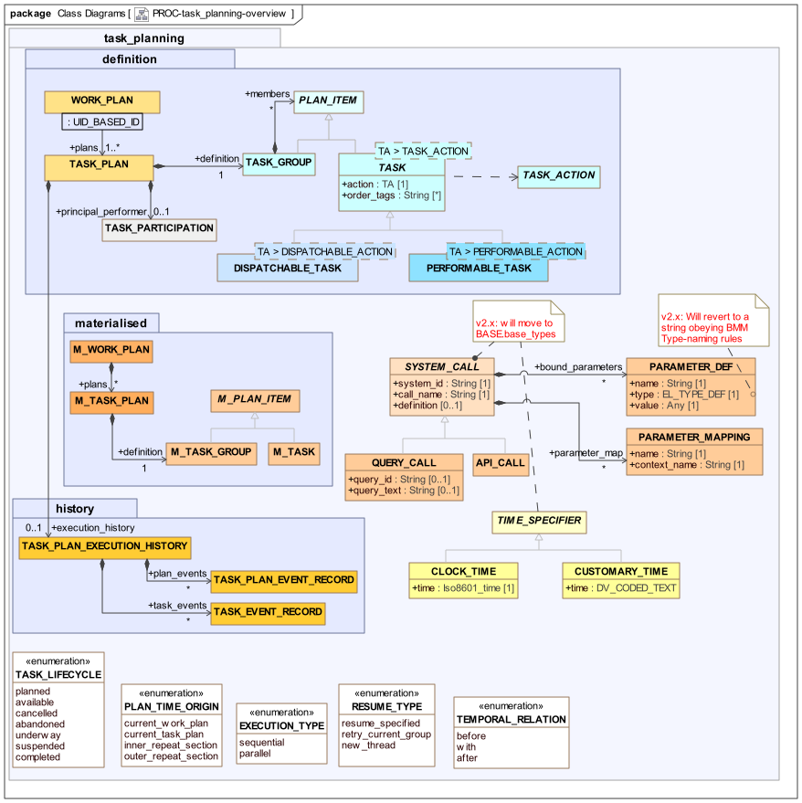
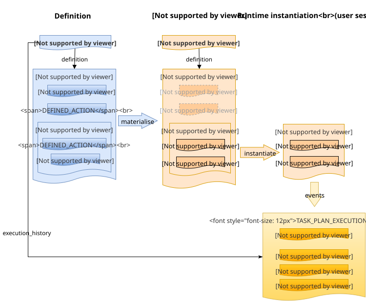
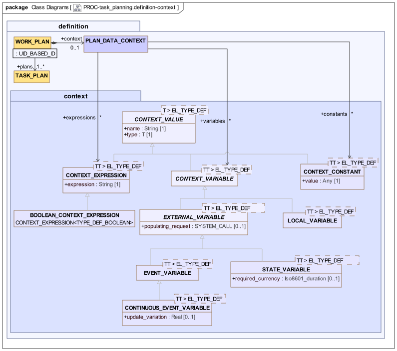

Task Planning Model Overview
This section and the following one describe the Task Planning model in technical detail. Most of the emphasis is on the 'definition' level of expression, with most details of the 'materialised' and 'runtime' expressions left to implementers. Throughout these sections, a version of the Task Planning Visual Modelling Language (TP-VML) is used to illustrate instance structures. This visual language is designed to be formally aligned to the semantics of the model.
The following UML diagram shows the rm.task_planning package in overview form, showing the constituent packages, definition, materialised, and history. The first of these packages contains the class model for the definition model expression of a Work Plan, i.e. the workflow structure intentionally designed to achive a goal.
The materialised package contains the class model of the materialised form of the definition, which is created prior to its use in execution. The materialised model is presented in outline only, as a way of indicating some of the general features of the materialised form, and is not intended to be normative. (At some point in the future, a skeleton materialised model may be declared normative, based on implementation experience).
The history package contains the model of audit events that have occurred to each Task Plan in a Work Plan during execution.

proc.task_planning package overviewThe following instance diagram illustrates the relationships among these models for one Task Plan. On the left is a Task Plan definition, consisting of a Task Group and various Defined Actions. Each of these Tasks may have a prototype Entry attached, which represents the intended data of an Action, Observation or other Entry that the Task defines.
In the centre is a materialised Task Plan, which is an execution-time structure used to maintain state for an executing Plan. This structure allows the representation of all state to do with Plan execution, including instances of variables, timing information and so on. The materialised structure is not owned by the definition structure, but rather is created at run time, and points back to its definition via various references. The right hand side of the diagram shows a part of the materialised structure that is currently instantiated within a user-application session.
At the lower right is a Task Plan Execution History, which is a record of all events that were made during the execution of the original Task Plan.

Identification and Referencing
With a Task Plan, various elements need to be referenceable at runtime. Tasks and Task Groups are identified via the uid attribute inherited from LOCATABLE via PLAN_ITEM, and which is populated with a Guid. References to a Task or Task Group are thus achieved with UID_BASED_ID instances carrying a Guid.
Plan Data Context
TBD: this section needs to be upgraded to latest EL and BMM model. The type EXPR_TYPE_DEF will be replaced by a BMM equivalent.
A Task Plan may contain logical symbolic values of various kinds, including constants, variable references and expressions, which are used in within the Plan structure. These are globally collated and tracked at runtime at the Work Plan level, i.e. in common to all Task Plans. Each context value has a symbolic name (CONTEXT_VALUE.name), a type from within the openEHR type system (EXPR_TYPE_DEF).
The following UML diagram illustrates.

An instance of PLAN_DATA_CONTEXT represents the full set of tracked variables and expressions used in a Work Plan, which are either atomic variables or constants, or else expressions that reference such variables, respectively represented by the classes CONTEXT_VARIABLE<T>, CONTEXT_CONSTANT<T> and CONTEXT_EXPRESSION<T>. These classes and the abstract parent are generic, with the parameter being the formal type of variable or expression.
Context variables are typically related to subject state, such as patient vital signs, key demographic characteristics and so on, or the clinical care process, such as the 'time since stroke event', while expressions are used to represent logical expressions such as $bp_systolic - $bp_diastolic, where $bp_systolic and $bp_diastolic are defined as single variables. The syntax of expressions is defined by the openEHR Expression language.
Two types of context variable are distinguished: external and local, represented by EXTERNAL_VARIABLE<t> and LOCAL_VARIABLE<T>. The former represent values of entities outside the task planning environment, and are written to via a populating_request which uses some method (such as EHR querying, API calls) to obtain the relevant external value. They are accordingly not writable from within the Work Plan.
There are two types of external variables - 'event' and 'state', which distinguish the update basis. An Event variable is 'watched' by some technical means, and its value is updated whenever it changes. The CONTINUOUS_EVENT_VARIABLE specialised type can be used for managing updates of continuous valued variables (i.e. real values) such that changes below a certain threshold, say 2% do not register.
Local variables are internal to the Work Plan, and can be read and written to by expressions used within Tasks in the Plan.
Class Descriptions
Unresolved include directive in modules/task_planning/pages/model_overview.adoc - include::ROOT:partial$classes/plan_data_context.adoc[]
Unresolved include directive in modules/task_planning/pages/model_overview.adoc - include::ROOT:partial$classes/context_value.adoc[]
Unresolved include directive in modules/task_planning/pages/model_overview.adoc - include::ROOT:partial$classes/context_constant.adoc[]
Unresolved include directive in modules/task_planning/pages/model_overview.adoc - include::ROOT:partial$classes/context_variable.adoc[]
Unresolved include directive in modules/task_planning/pages/model_overview.adoc - include::ROOT:partial$classes/external_variable.adoc[]
Unresolved include directive in modules/task_planning/pages/model_overview.adoc - include::ROOT:partial$classes/local_variable.adoc[]
Unresolved include directive in modules/task_planning/pages/model_overview.adoc - include::ROOT:partial$classes/event_variable.adoc[]
Unresolved include directive in modules/task_planning/pages/model_overview.adoc - include::ROOT:partial$classes/continuous_event_variable.adoc[]
Unresolved include directive in modules/task_planning/pages/model_overview.adoc - include::ROOT:partial$classes/state_variable.adoc[]
Unresolved include directive in modules/task_planning/pages/model_overview.adoc - include::ROOT:partial$classes/context_expression.adoc[]
Unresolved include directive in modules/task_planning/pages/model_overview.adoc - include::ROOT:partial$classes/boolean_context_expression.adoc[]
System Calls
The SYSTEM_CALL class and its descendants provide a way to represent a call to any service or interface available within the computing environment. The class attributes are designed to carry sufficient meta-data such that a call invocation module or plug-in in the Task Planning execution environment can convert the call to a concrete form (e.g. a REST or RPC call) and then execute it.
Generic API calls
The representation of a generic API call is via the API_CALL class, while the QUERY_CALL class provides a way to represent a call to a query service.
For generic API calls, the assumed model of calling is as follows: when the call is invoked, all required parameters are passed; these are obtained from two sources:
-
context values: context values, Work Plan built-in variables (see below);
-
fixed parameters: parameters whose value is fixed from the point of view of the Plan definition.
The first is specified via the parameter_map attribute, which defines the mapping between the external call parameter names and the names of variables that will be used to populate them at invocation. For example, assume there is an API call in a clinical decision support service with the following signature, which is to be used in a Task Plan:
cds_calc_risk (
riskType: String;
sex: CodedText;
dateOfBirth: Iso8601Date;
isSmoker: Boolean;
): RealThe parameter_map attribute of the SYSTEM_CALL instance will contain the following, where the left hand item in each case is the name of a Work Plan context value (i.e. variable, expression or constant):
{
"parameter_map": [
{"context_name": "subject_sex", "name": "sex"},
{"context_name": "subject_dob", "name": "dateOfBirth"},
{"context_name": "tobacco_use_status", "name": "isSmoker"}
]
}This tells the Task Plan execution system to inject the current value of the context variable subject_sex into the location where the sex parameter is expected and so on.
TBD: we may need to allow functions, so that data type/structure conversions can be managed.
The second type of parameter is a fixed value, which enables the System call to represent the external call in a preferred way. An example of this is a general API call such as cds_check (type: String, other_args, …) might be used from within the Task Plan with the first argument fixed in each case, to form specific invocations, e.g. cds_check ("hypertension risk", other_args, …), cds_check ("diabetes type 2 risk", other_args, …) etc. Fixed parameters are represented in the bound_parameters attribute of a SYSTEM_CALL instance.
The total set of parameters for any System call is provided by the combination of the contents of the parameter_map and bound_parameters attributes, where either may be empty.
Query Calls
The above provides for API calls whose signature definition may be more or less anything. For the case of query invocation, some simplifying assumptions can be made, and in the interests of clarity, the QUERY_CALL class is defined for this purpose. A QUERY_CALL instance represents a query invocation which is assumed to take the form of either an ad hoc query or a stored query, with substitutable parameters. accordingly, the external API calls are therefore assumed to take one of the two forms:
// ad hoc query call
execute_ad_hoc_query (
query_text: String;
parameters: Hash<String, String>;
): Result
// stored query call
execute_stored_query (
query_id: String;
parameters: Hash<String, String>;
): ResultIn the first case, a query string is supplied; in the second, the registered identifier of a stored query is supplied. In both cases, the substitutable parameters are supplied though the args attribute, which is a keyed list of String values that can be substituted into the replaceable parameters found in the query.
In order to represent an invocation of either of these calls, the parameter_map attribute is used to represent the map between the names of the substitutable parameters in the query and variables from the Work Plan context. Since these are often likely to be the same (almost certainly the case for ad hoc queries), mappings are only required for substitutable variables whose names differ in the query and in the Plan context variable set.
The bound_parameters may be used in a similar fashion, to represent fixed-value substitutable parameters.
As a consequence of this scheme, the total set of replaceable query parameters is specified by the combination of the parameter_map, the bound_parameters and the context variables. In many cases, only the latter may be used.
Class Descriptions
Unresolved include directive in modules/task_planning/pages/model_overview.adoc - include::ROOT:partial$classes/system_call.adoc[]
Unresolved include directive in modules/task_planning/pages/model_overview.adoc - include::ROOT:partial$classes/parameter_def.adoc[]
Unresolved include directive in modules/task_planning/pages/model_overview.adoc - include::ROOT:partial$classes/parameter_mapping.adoc[]
Unresolved include directive in modules/task_planning/pages/model_overview.adoc - include::ROOT:partial$classes/api_call.adoc[]
Unresolved include directive in modules/task_planning/pages/model_overview.adoc - include::ROOT:partial$classes/query_call.adoc[]
Variable Referencing
Within the expressions and System calls used in Task definitions, various variables may be used. These include the context variables described above and built-in variables defined for any Work Plan context, enabling the current Plan, current Task etc to be referred to, for example in a System call. The 'camel-case' and 'snake-case' variants of a variable name are treated as equivalents, i.e. $var_name and $varName refer to the same thing. Among the context variables, some standard defaults are recommended in order to maximise reusability of Task Plan definitions.
Within expressions, defined variables are referenced using the '$' syntax, i.e. $var_name or $varName. Within System calls there are two places where variable references may appear:
-
within the
parameterslist, to indicate the mapping of a call parameter to a variable defined in the Work Plan context; -
as lexical inline replaceable parameters within a call parameter that represents an ad hoc query string or similar.
For the first case, the '$' name form is used. In the second case, variables usually appear within query strings in a lexical form that depends on the particular kind of query syntax, i.e. forms such as:
-
$var_name- openEHR AQL; -
@varName- SQL Server, Oracle, PostGres 9 or later; -
$[varName]- some SQL implementations.
TBD: do we need another property to record the type of query syntax, e.g. 'aql', 'oracle-sql', or variable syntax, since it is not a SQL standard?
The following table describes the variables available within a typical Work Plan.
| Name | Type | Status | Description |
|---|---|---|---|
Work plan-defined variables |
|||
|
|
Standard |
Variable referring to current |
|
|
Standard |
Variable referring to current |
|
|
Standard |
Variable referring to current |
|
|
Standard |
Variable referring to current |
|
|
Standard |
Variable referring to current |
Context variables and expressions |
|||
|
|
Standard |
Any variable or expression, e.g. |
|
|
Preferred |
Variable referring to EHR id of EHR of the subject of the Task Plan |
|
|
Preferred |
Variable referring to subject current systolic arterial blood pressure |
|
|
Preferred |
Variable referring to subject current diastolic arterial blood pressure |
|
|
Preferred |
Variable referring to subject current heart rate |
Specifying Time
Generic classes for specifying time formally and in customary form such as 'afternoon' are provided for use in the main model. These are shown bottom right of the above UML diagram: TIME_SPECIFIER and descendants.
Class Descriptions
Unresolved include directive in modules/task_planning/pages/model_overview.adoc - include::ROOT:partial$classes/time_specifier.adoc[] Unresolved include directive in modules/task_planning/pages/model_overview.adoc - include::ROOT:partial$classes/clock_time.adoc[] Unresolved include directive in modules/task_planning/pages/model_overview.adoc - include::ROOT:partial$classes/customary_time.adoc[]
Enumerated Types
Various enumerated types are defined in the definitions package, for use by the definition, materialised and runtime models. The TASK_LIFECYCLE enumeration is included in [_lifecycle_state].
Class Descriptions
Unresolved include directive in modules/task_planning/pages/model_overview.adoc - include::ROOT:partial$classes/resume_type.adoc[] Unresolved include directive in modules/task_planning/pages/model_overview.adoc - include::ROOT:partial$classes/temporal_relation.adoc[] Unresolved include directive in modules/task_planning/pages/model_overview.adoc - include::ROOT:partial$classes/execution_type.adoc[] Unresolved include directive in modules/task_planning/pages/model_overview.adoc - include::ROOT:partial$classes/plan_time_origin.adoc[]